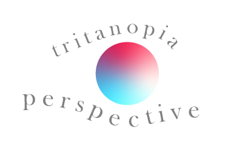

Blue-yellow Colorblindness
Tritanopia is a rare type of dichromacy which is a blue-yellow defect. Studies show that it affects between 1 in 50, 000, and it both occurs in both genders. People who have blue-yellow defects accordingly have fewer problems in performing everyday tasks than with those red-green dichromacy (6).